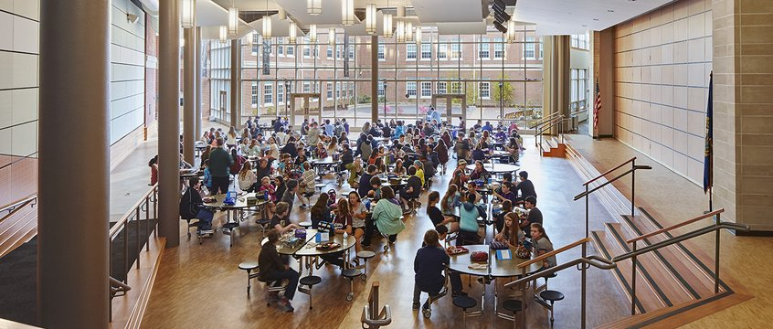

Campus Life

School Church
Corpus christi church is the school church
it is a church where students can go to to pray before/after school.it is open 24/7.

school library
portsmouth library
There is no need for a library in the school as the public library sits right by the highschool and middlle school.

school auditorium
about the auditorium
This is the school auditorium. new seats have recently been installed.
School Achievements
Won first prize in inter school debate on environment pollution
We are proud to say that portsmouth high school won FIRST PLACE in inter school debate.

Came second in interschool basket ball competition
the kids at our school won second place in the basketball competition.

Won second price in inter school Science Project competition
school won second place in science competition
What's New
-
New School Canteen
The food options and responsibilities to consider, canteens must be better organised and more efficient than they have been in the past. Online menus with photographs of the meals prepared, and detailed descriptions of their ingredients help both students and parents make the right nutritional choices. Each student or staff member who accesses the canteen could be provided with a School Canteen Account on the school website that keeps track of their previous meal choices and any dietary requirements they may have. Ordering online by ticking a box and paying for meals online can eliminate all the fuss of money handling, making it safer and less complicated for staff and students alike. Here again, diversity is the key.
-
Implemented Online Attendance Management System
Implemented Online Attendance Management System: This informs parents about their child's/children's activities in the school, instantly. Once a student reaches the school, the parents will be informed about the status via text messages. This helps schools keep a record of the students’ absenteeism. Students can mark the attendance by logging in, and this is stored in a database, which can later be checked by the Admin. The tracker has so much potential that it can identify which students are irregular to their classes and not ready to establish connectivity with the actual concepts of their curriculum’s subjects. As soon as you enter a student’s Enrollment Number or Name, details like availability in classes, number of lectures attended will be displayed and no proxies are possible since the tracker is supported by cloud capabilities. Even the security offered can be so robust and powerful that those students who always fool their deans are caught in a shorter span – just after the admin enters login details into this tracker. All this will improve accuracy and transparency in any of the educational institutions as students and their parents are pre-informed about the real-time status of leave requests and absenteeism in a confidential manner and at reduced costs.
Contact Us